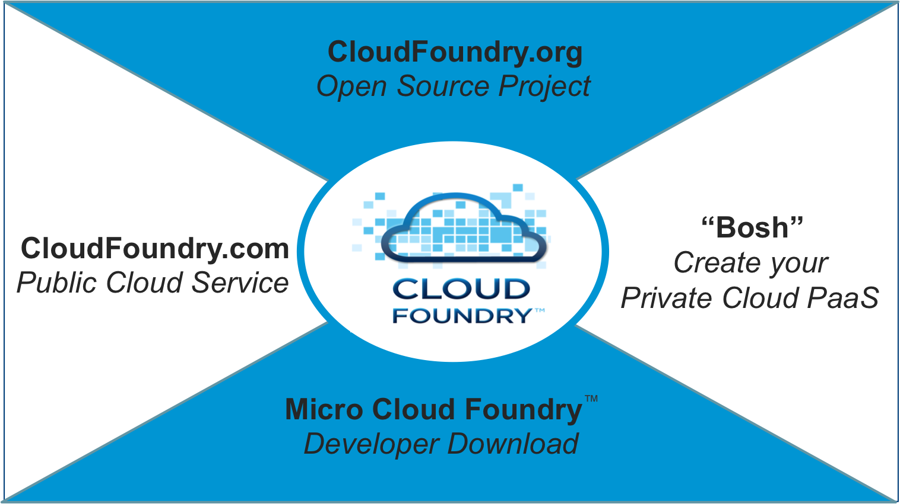
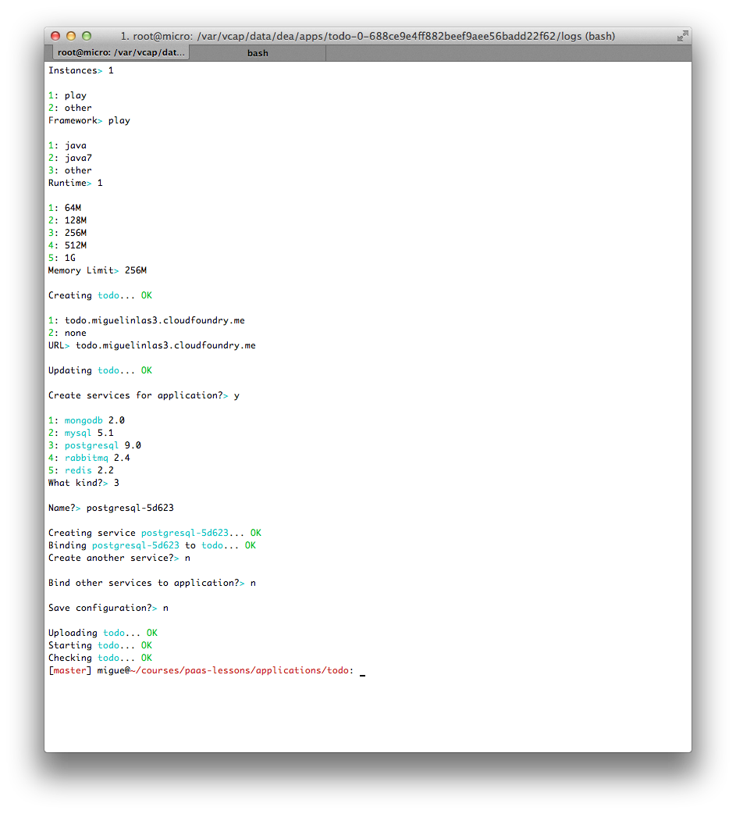

slide /
Cloud computing is the use of computing resources (hardware and software) that are delivered as a service over a network (typically the Internet).
Platform as a service (PaaS) is a category of cloud computing services that provide a computing platform and a solution stack as a service
Choice of clouds for deployment
Choice of industry-standard frameworks and application infrastructure services
Extensible architecture to “digest” future cloud innovation
Available as open source
Build applications with latest high productivity frameworks
Deploy and cloud-scale applications in seconds

Intance of Cloud Foundry prepared to run in a developer machine
Distributed as a Virtual Machine image
Full instance
Develop and test in your local environment, deploy to any cloud
If Ruby is already installed in your machine just open a console and type:
sudo gem install vmc
Configure our Micro Cloud Foundry account
Target our micro cloud
vmc target miguelinlas3.cloudfoundry.me
Create a new account. Enter your email address and the password (twice)
vmc register
We can log into the vm using the root (or vcap) users. Use the password setted at the beginning of the process
ssh root@miguelinlas3.cloudfoundry.me
Scala powered. Leverage as much as possible to the compiler type checker
Reactive model: based evented IO
Stateless, easy to scale
Scala and Java APIs
One of the most popular Open Source RDMBS
NoSQL storage
Message queue system
AMQP
play new getting-started
play run
package controllers
import play.api._
import play.api.mvc._
object Application extends Controller {
def index = Action {
Ok("This is our first Play application. And it is written in Scala")
}
}
vmc target http://api.miguelinlas3.cloudfoundry.me
vmc login
play clean dist
vmc push --path=dist/getting-started-1.0-SNAPSHOT.zip
Create TODO task
List all TODO tasks
package models;
import play.db.ebean.Model;
import java.util.List;
import javax.persistence.Entity;
import javax.persistence.Id;
@Entity
public class Task extends Model {
public static Finder find = new Finder(
Long.class, Task.class
);
public static List all() {
return find.all();
}
public static void delete(Long id) {
find.ref(id).delete();
}
@Id
public String id;
public String contents;
}
# Home page GET / controllers.Application.index() # Map static resources from the /public folder to the /assets URL path GET /assets/*file controllers.Assets.at(path="/public", file) POST /task controllers.Application.addTask() GET /tasks controllers.Application.allTasks()
package controllers;
import models.Task;
import play.data.Form;
import play.*;
import play.mvc.*;
import play.db.ebean.Model;
import java.util.List;
import static play.libs.Json.toJson;
import views.html.*;
public class Application extends Controller {
public static Result addTask() {
Form form = form(Task.class).bindFromRequest();
Task task = form.get();
task.save();
return redirect(routes.Application.index());
}
public static Result index() {
return ok(index.render("TODO Application", form(Task.class)));
}
public static Result allTasks() {
return ok(toJson(Task.all()));
}
}
play clean dist
vmc push --path=dist/todo-1.0-SNAPSHOT.zip

play new todo-nosql
# Home page GET / controllers.Application.index() # Map static resources from the /public folder to the /assets URL path GET /assets/*file controllers.Assets.at(path="/public", file) POST /task controllers.Application.addTask() GET /tasks controllers.Application.allTasks()
package controllers;
import models.Task;
import play.data.Form;
import play.*;
import play.mvc.*;
import play.db.ebean.Model;
import java.util.List;
import static play.libs.Json.toJson;
import views.html.*;
public class Application extends Controller {
public static Result addTask() {
Form form = form(Task.class).bindFromRequest();
Task task = form.get();
task.save();
return redirect(routes.Application.index());
}
public static Result index() {
return ok(index.render("TODO Application", form(Task.class)));
}
public static Result allTasks() {
return ok(toJson(Task.all()));
}
}
play clean dist
vmc push --path=dist/todo-1.0-SNAPSHOT.zip
/
#